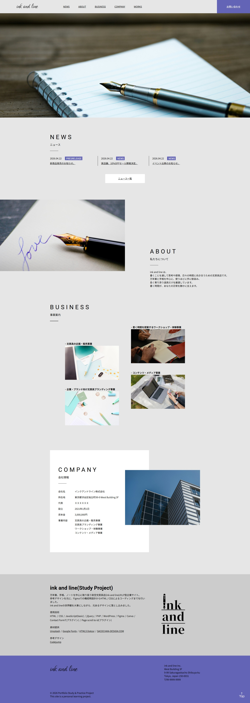
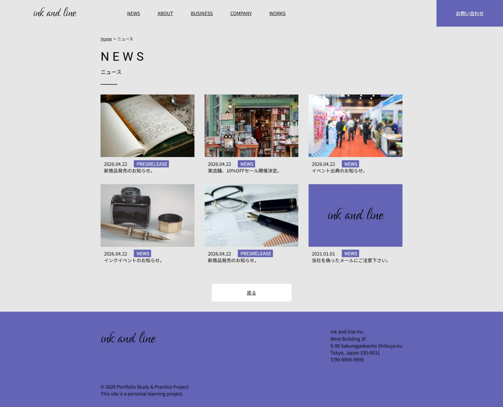
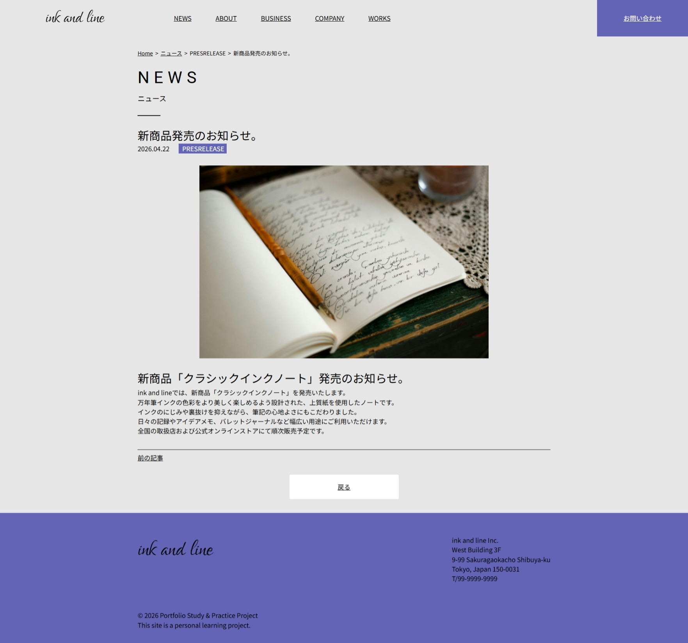
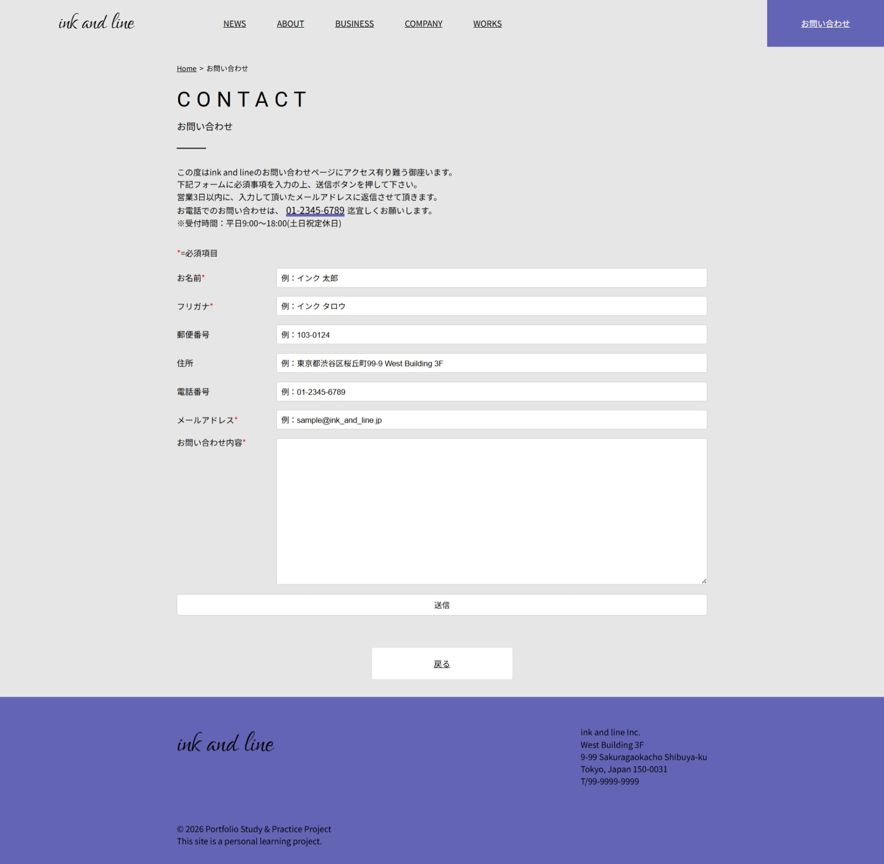
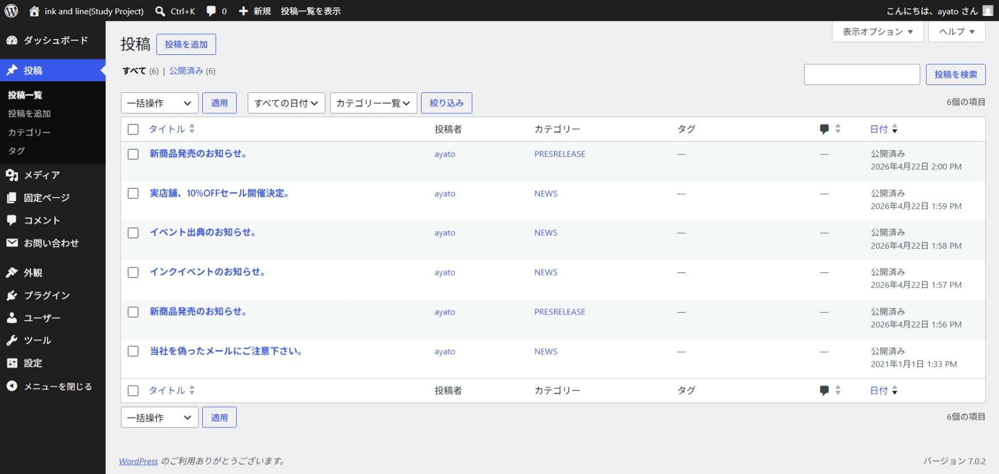
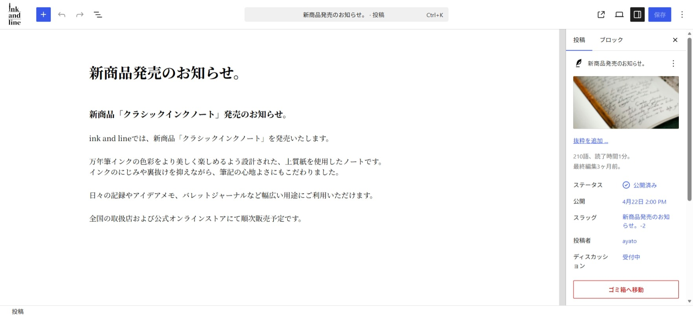
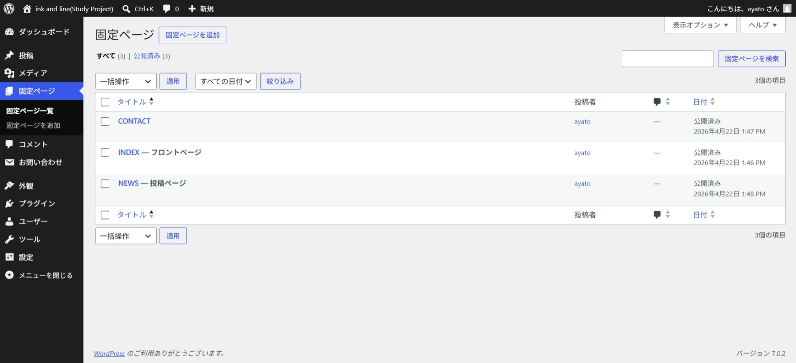
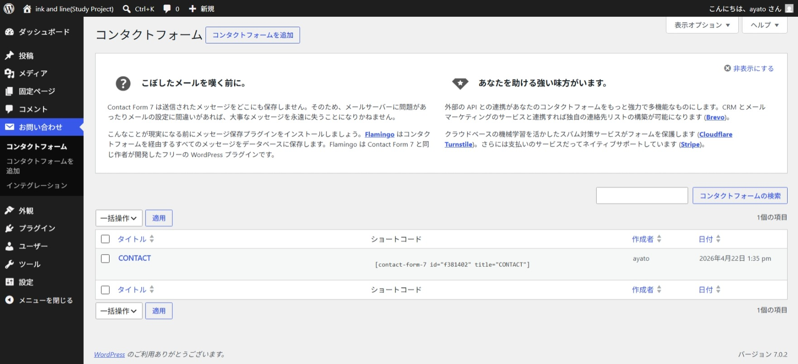

LP型企業サイト模写(WordPressテーマ化)
Tag
Selfwork
Website
HTMLで制作した企業サイトを元に、WordPressのオリジナルテーマとして再構築しました。
トップページ、ニュース一覧、ニュース詳細ページを投稿機能で管理できるよう実装し、更新性を意識した構成にしています。
また、お問い合わせフォームには Contact Form 7 を使用し、実運用を想定した形で構築しました。
テーマ開発では、header.php・footer.phpの分割、single.php・home.phpの作成など、WordPressの基本構造を意識して実装しています。
使用技術
- HTML
- JavaScript(basic)
- jQuery
- PHP
- WordPress
- Contact Form7(プラグイン)
- Page scroll to id(プラグイン)
参考デザイン
Codejump
制作時間：約10日
制作ツール：Visual Studio Code/XXAMP/MySQL
完成日：2026.04.21
デモサイト(HTML版)
https://github.com/ayato-design/portfolio3/